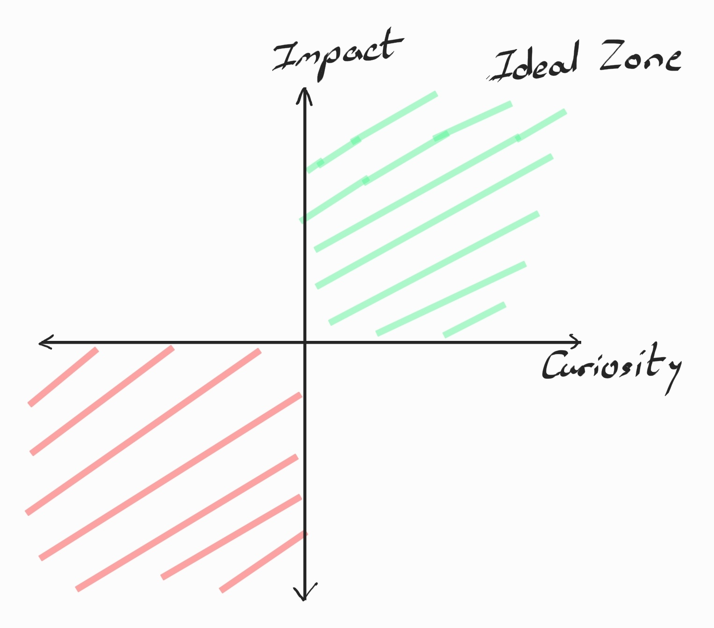

After 2.5 years of association with Nokia Bell Labs, I have decided to move on. Moving into a more product oriented data science role at the Expedia Group, from a blue sky research role at Bell labs.

The thesis roughly states that one has limited time to spend on this earth, and should optimize it to maximize impact and curiosity driven learning. But maximizing both requires walking up the line at 45 degrees (which I call the fence) to the very top right corner. However, more often than not, you end up loitering around the central part of this fence. This is because maximizing either often require orthogonal sets of skills. To drive impact one needs focus of execution, and a relentless will to iterate. To leverage curiosity, one needs an open mind and enough time to try things out. Being on the fence means you cannot do either well.
I always considered myself to be a curious person. Putting myself into a box was never an intriguing idea, which is precisely why I always wanted to do a Ph.D. A doctoral journey has more to do with the framework of thought, than with the resulting outcomes. It teaches you to start off from zero and dig deep enough to discover new knowledge.
But I have also always immensely valued impact, and the gratification felt while witnessing what you have built being used by real people. This tug of war between the two orthogonal philosophies meant that I involuntarily defaulted to the fence. Choosing to sit on the fence is deliberately choosing a sub-optimal environment. So for now, I will be playing jump rope with the fence, and see where that leads me.